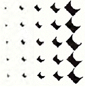
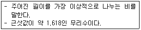
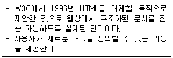
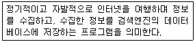
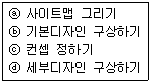
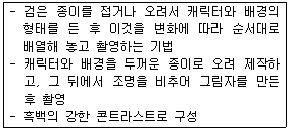
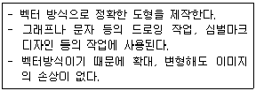
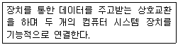

웹디자인기능사 (2015-10-10 기출문제)
1과목: 디자인 일반
1. 유채색에서 볼 수 있는 대비로 연속대비라고도 하며, 잔상 효과와 가장 밀접한 관련이 있는 것은?
- 색상대비
- 계시대비
- 채도대비
- 명도대비
(정답률: 73%)

2. 다음 그림에 대한 설명으로 옳은 것은?

- 반사 운용
- 회전 운용
- 팽창 이동 패턴
- 조화 패턴
(정답률: 93%)
3. 기계화와 대량 생산에 의한 생활 용품의 품질 저하에 반대하여 월리엄 모리스를 중심으로 영국에서 일어난 것은?
- 산업혁명
- 아르 누보
- 미술공예운동
- 대규모생산운동
(정답률: 89%)
4. 다음 색체계열 중 피를 많이 보는 수술실과 같은 공간에 가장 알맞은 것은?
- 갈색계열
- 흰색계열
- 녹색계열
- 보라색계열
(정답률: 89%)
5. 다음의 관용색명 중 성격이 다른 것은?
- 살구색
- 밤색
- 레몬색
- 상아색
(정답률: 72%)
6. 태양광선이 투사되는 위치에 프리즘을 놓아 굴절된 광선을 스크린에 투사하여 나타난 여러 가지 색의 띠를 무엇이라 하는가?
- 전자파
- 감마선
- 스펙트럼
- 자외선
(정답률: 92%)
7. 다음 중 나머지 세 가지와 성격이 다른 디자인 분야는?
- 인테리어 디자인
- 광고 디자인
- 편집 디자인
- 시각 디자인
(정답률: 80%)
8. 선(Line)에 대한 설명으로 잘못된 것은?
- 유기적인 선은 정확하고 긴장되며 기계적인 느낌을 준다.
- 수직선은 세로로 된 선으로 숭고한 느낌을 준다.
- 수평선은 가로로 된 선으로 편안한 느낌을 준다.
- 사선은 비스듬한 선으로 동적인 움직임과 불안한 느낌을 준다.
(정답률: 78%)
9. 시각적 질감의 예로 성격이 다른 하나는?
- 사진의 망점
- 인쇄상의 스크린 톤
- 대리석 무늬
- 모니터 주사선
(정답률: 75%)
10. 체계적인 국가 정책을 기반으로 공학적이며, 기능적인 디자인이 특징인 국가는?
- 중국
- 프랑스
- 스칸디나비아
- 독일
(정답률: 80%)
11. 다음이 설명하고 있는 것은?

- 비례
- 황금비
- 삼각분할
- 루트비례
(정답률: 91%)
12. 망막에 다른 색광이 자극하여 혼합되는 현상으로 색 점이 서로 가깝게 있어 명도와 채도가 떨어지지 않는 혼합 방식은?
- 보색혼합
- 병치혼합
- 가산혼합
- 감산혼합
(정답률: 61%)
13. 음에서도 색을 느낄 수 있는데 이 현상을 무엇이라 하는가?
- 명시성
- 공감각
- 색청
- 주목성
(정답률: 67%)
14. 게슈탈트(Gestalt)의 형태에 관한 시각 기본 법칙에 해당 되지 않는 것은?
- 통일
- 근접
- 유사
- 연속
(정답률: 72%)
15. 다음 중 2차원 디자인에 포함되지 않는 것은?
- 타이포그래피
- 일러스트레이션
- 애니메이션
- 편집디자인
(정답률: 81%)
16. 굿 디자인(Good Design)의 조건으로 옳은 것은?
- 합목적성, 실용성, 경제성, 효용성
- 합목적성, 심미성, 모방성, 경제성
- 합목적성, 경제성, 심미성, 독창성
- 합목적성, 심미성, 질서성, 독창성
(정답률: 79%)
17. 먼셀의 무채색 11단계 중 중간 명도에 해당하는 단계는?
- 0~3
- 4~6
- 7~8
- 9~10
(정답률: 80%)
18. 디자인 원리 중 균형(balance)에 해당하지 않는 것은?
- 대칭
- 비례
- 율동
- 주도와 종속
(정답률: 60%)
19. 다음 중 색채 계획상 유의할 점으로 관련성이 가장 적은 것은?
- 안정성
- 경제성
- 심미성
- 도덕성
(정답률: 84%)
20. "디자인대상이 되는 것은 모두가 실용적으로 사용할 수 있는 것이다"에 해당하는 디자인의 조건으로 가장 옳은 것은?
- 심미성
- 독창성
- 합목적성
- 경제성
(정답률: 84%)
2과목: 인터넷 일반
21. HTML 문서에 자바스크립트를 삽입하는 방법으로 틀린 것은?
- HTML 문서의<head>나, <body>태그(tag) 사이에 소스를 직접 입력한다.
- 자바스크립트 소스를 확장자 .js인 외부 파일로 저장하여 불러온다.
- 소스가 길어질 경우 함수로 이름을 지정해 호출하여 사용한다.
- HTML 문서의 태그 내에 애플릿과 함께 사용한다.
(정답률: 62%)
22. 다음 인터넷 검색엔진 중 주제별 검색에 의한 1 기법을 사용하지 않는 것은?
- 야후(Yahoo)
- 네이버(Naver)
- 멀티서치(Multisearch)
- 다음(Daum)
(정답률: 87%)
23. 다음 설명에 해당하는 것은?

- CSS
- DHTML
- SOAP
- XML
(정답률: 52%)
24. HTML 문서를 구성하는 태그 중 본문을 나타내는 것은?
- <Meta> </Meta>
- <Head> </Head>
- <Body> </Body>
- <Tbody> </Tbody>
(정답률: 89%)
25. 다음 설명과 관계가 없는 것은?

- bug
- crawler
- robot
- worm
(정답률: 54%)
26. 자바스크립트 언어의 기본적인 특성으로 틀린 것은?
- 대·소문자를 구분한다.
- 변수 이름에 공백 문자를 사용할 수 있다.
- 하나의 명령문이 끝나면, 세미콜론(;)을 기술한다.
- 변수 이름은 반드시 영문자 또는 밑줄(_)로 시작해야 한다.
(정답률: 62%)
27. 인터넷 서비스의 종류에 해당하지 않는 것은?
- 텔넷(telnet)
- 전자우편 (e-mail)
- 채팅(chatting}
- 허브(hub)
(정답률: 74%)
28. OSI 7계층 구조를 하위 계층부터 상위 계층까지 순서대로 나열한 것은?
- 물리계층→데이터 링크계층→세션계층→네트워크계층→전송계층→응용계층→표현계층
- 물리계층→데이터 링크계층→네트워크계층→전송계층→세션계층→응용계층→표현계층
- 물리계층→데이터 링크계층→네트워크계층→전송계층→세션계층→표현계층→응용계층
- 전송계층→물리계층→데이터 링크계층→네트워크계층→세션계층→표현계층→응용계층
(정답률: 66%)
29. 최상위 도메인 edu와 동일한 성격을 갖는 서브 도메인의 이름은?
- ac
- go
- or
- re
(정답률: 66%)
30. 인터넷의 발전을 시대 순으로 옳게 나열한 것은?
- ARPANET→NSFNET→TCP/IP 표준→WWW
- ARPANET→TCP/IP 표준→NSFNET→WWW
- TCP/IP 표준→ARPANET→NSFNET→WWW
- TCP/IP 표준→NSFNET→ARPANET→WWW
(정답률: 45%)
31. 다음 중 웹(Web)에 대한 설명으로 틀린 것은?
- 웹은 World Wide Web의 약자이다.
- 하이퍼텍스트 자료들은 HTML이라는 언어를 통해 표현된다.
- HTTP라는 통신 프로토콜을 사용한다.
- 문자 중심이며 동영상 자료는 전송이 불가하다.
(정답률: 85%)
32. VRML(Virtual Reality Modeling Language)에 관한 특징으로 틀린 것은?
- 웹에서 사용되는 언어이므로 플랫폼에 독립적이다.
- 3차원 공간을 표현하는 텍스트 파일로 데이터 전송시간이 길다.
- 웹 관련 표준 언어를 수용할 수 있어 HTML 문서와 연계해서 사용할 수 있다.
- 사이버 쇼핑몰을 만들거나 3차원 채팅 사이트, 가상학교 등의 제작이 가능하다.
(정답률: 47%)
33. 다음 중 최초의 GUI 환경의 웹 브라우저는?
- 익스플로러
- 네스케이프
- 모자이크
- 랜드스케이프
(정답률: 54%)
34. 비대칭 디지털 가입자 회선인 ADSL에 대한 설명으로 틀린 것은?
- Asymmetric Digital Subscriber Line의 약자로 미국 '벨코어'사에서 개발한 기술이다.
- 고속 데이터 통신과 일반 전화를 동시에 이용할 수 있지만 데이터 통신 속도가 절반으로 떨어지게 된다.
- ADSL은 가입자와 전화국 간의 데이터 교환 속도가 서로 다르다.
- 하나의 회선으로 데이터 통신과 일반전화의 이용이 가능하다.
(정답률: 49%)
35. 인터넷 익스플로러에서 오늘 방문했던 사이트들을 확인하려면 표준단추모음(Standard Button Bar)에서 어떤 버튼을 사용해야 하는가?
- 검색
- 기록
- 즐겨찾기
- 보기
(정답률: 85%)
36. 다음 중 웹 페이지 저작도구로 가장 알맞은 것은?
- 드림위버(Dreamweaver)
- 마야(Maya)
- 3D 스튜디오 맥스(3D Studio MAX)
- 소프트이미지(Soft Image)
(정답률: 83%)
37. 전자우편(e-mail)을 전송할 때 사용되는 프로토콜은?
- FTP
- SMTP
- Telnet
- Usenet
(정답률: 80%)
38. HTML 문서에서 하이퍼링크 설정 시 새로운 창 을 열어 문서를 연결하는 속성을 지정하고자 한다. ①에 들어갈 옵션으로 옳은 것은?
- _SELF
- _PARENT
- _TOP
- _BLANK
(정답률: 73%)
39. HTML을 이용한 웹페이지 제작에 대한 설명으로 틀린 것은?
- Markup 태그를 이용하여 제작한다.
- 다양한 멀티미디어 포맷의 파일을 연결시킬 수 있다.
- 하나의 그림에는 하나의 문서나 사이트만을 연결할 수 있다.
- 위지위그(WYSIWYG) 방식은 직접 코드를 입력하지 않아도 웹페이지 구성이 가능하다.
(정답률: 63%)
40. 자바 스크립트 내에서 사용되는 String 객체에 대한 설명으로 틀린 것은?(문제 오류로 여기서는 기존 정답인 3번을 누르면 정답 처리 됩니다. 자세한 내용은 해설을 참고하세요.)
- repIace() - 임의의 문자열에서 지정한 문자를 다른 문자로 변경한다.
- match() - 임의의 문자열에서 지정한 문자가 나타나는 첫 번째 위치 값을 반환한다.
- split() - 지정한 문자열을 검색하여 해당 문자열을 반환한다.
- toUpperCase() - 문자열에 존재하는 소문자를 모두 대문자로 변환하여 반환한다.
(정답률: 66%)
3과목: 웹그래픽스 디자인
41. 물체 경계면의 픽셀을 물체의 색상과 배경의 색상을 혼합해서 표현하여 경계면이 부드럽게 보이도록 하는 기법은?
- Antialiasing
- Dithering
- Blending
- Compositing
(정답률: 72%)
42. 홈페이지의 해당 컨셉(concept)을 이끌어 내기 위해 종이에 최대한 많이 그려 봄으로써 여러 가지 구성을 만들어 보는 디자인 실무의 초기 작업은?
- 브레인스토밍
- 콘텐츠디자인
- 벤치마킹
- 아이디어스케치
(정답률: 81%)
43. 다음은 웹디자인 프로세스의 각 단계이다. 순서대로 옳게 나열한 것은?

- ⓐ→ⓑ→ⓒ→ⓓ
- ⓐ→ⓑ→ⓓ→ⓒ
- ⓒ→ⓑ→ⓐ→ⓓ
- ⓒ→ⓐ→ⓑ→ⓓ
(정답률: 56%)
44. 다음 설명에 해당하는 것은?

- 퍼펫 애니메이션
- 클레이메이션
- 로토스코핑 애니메이션
- 실루엣 애니메이션
(정답률: 84%)
45. 다음 중 웹페이지 제작 방법에 대한 설명으로 틀린 것은?
- 메모장과 같은 일반적인 에디터를 사용하여 직접코딩 한다.
- 워드프로세서를 사용하여 작성 후 HTML로 변환 사용 한다.
- 코딩 방식의 웹 에디터인 나모웹에디터로 제작한다.
- 위지위그(WYSIWYG)방식의 웹 에디터인 드림위버로 제작한다.
(정답률: 33%)
46. 웹 페이지를 제작할 때 사용되는 웹 에디터로 옳은 것은?
- 플래시
- 페인터
- 코렐드로우
- 프론트 페이지
(정답률: 68%)
47. 웹페이지에서 사용되는 이미지 파일 포맷으로 가장 거리가 먼 것은?
- PNG
- GIF
- TIFF
- JPG
(정답률: 82%)
48. 래스터 이미지(raster image)에 대한 설명으로 틀린 것은?
- 화면 확대 시 이미지가 손상된다.
- 비트맵 이미지를 래스터 이미지라고 한다.
- 일러스트레이터에서 주로 사용되는 이미지 형식이다.
- 디지털 카메라로 찍은 이미지는 래스터 이 미지이다.
(정답률: 67%)
49. 웹 그래픽 제작 단계 중 색상(Color) 선택 단계의 작업에 해당하는 것은?
- 컴퓨터가 제공하는 여러 가지 기능의 효율적 사용에 대해 연구한다.
- 이미지의 합성 과정을 통하여 의도한 이미지로 변형한다.
- 표현하고자 하는 색상들은 색 혼합이나 색상, 명도, 채도들을 원하는 대로 조절할 수 있고, 색상을 다양하게 사용할 수 있다.
- 이미지가 선택되면 도구의 기능을 사용하여 축소나 확대 반복, 회전들을 화면상에 제공하며, 이미지를 표현하기 위해 그래픽스 메뉴를 선택한다.
(정답률: 80%)
50. 일반적인 애니메이션 제작과정으로 옳은 것은?
- 스토리보드→기획→제작→음향→레코딩
- 스토리보드→제작→기획→음향→레코딩
- 기획→스토리보드→제작→음향→레코딩
- 기획→스토리보드→음향→제작→레코딩
(정답률: 71%)
51. 키 프레임 방식의 애니메이션에 대한 설명으로 옳은 것은?
- 정해진 시간에 한 컷, 한 컷을 보여주는 방식이다.
- 움직임의 시작과 끝을 지정하고, 중간단계는 시스템에서 계산되어 자동으로 생성된다.
- 정지화면을 연속적으로 빠르게 보여주어 움직임을 부여할 수 있다.
- 보통 만화는 1초에 2~24컷, 영화나 광고는 1초에 80컷을 사용한다.
(정답률: 53%)
52. 웹 그래픽 디자인은 효과적으로 웹 사용자에게 정보전달을 돕는 도구라고 할 수 있다. 다음 중 정보전달 역할로서의 웹디자인과 가장 거리가 먼 것은?
- 정보 접근의 편의성 제공
- 정보에 대한 빠른 이해력 증대
- 시각적, 청각적인 친근감 확대
- 개성적인 표현의 다양성
(정답률: 74%)
53. 미국 Boeing CAD 시스템을 개발하여 CAD 시대의 개막을 알렸으며, 컴퓨터 그래픽스의 단체 SIGGRAPH가 발족된 시대는?
- 1950년대
- 1960년대
- 1970년대
- 1980년대
(정답률: 44%)
54. 웹 사이트 관련 용어에 대한 설명으로 틀린 것은?
- 네비게이션 바 - 메뉴를 한곳에 모아놓은 그래픽 또는 문자열의 모음
- 사이트 메뉴 바 - 버튼을 눌러 메뉴를 나타내는 기능
- 라인 맵 - 이동 경로를 한 번에 보여주는 방식
- 디렉토리 - 주제나 항목별로 범주화하고, 계층적으로 구조화 시킨 것
(정답률: 40%)
55. 3차원 캐릭터에서의 자연스러운 동작을 구현하는 애니메이션 기법으로 실제 생명체의 움직임을 추적하여 얻은 데이터를 모델링된 캐릭터에 적용하는 것은?
- Motion Steel
- Stop Motion
- Virtual Actor
- Motion Capture
(정답률: 66%)
56. 다음과 같은 특징을 가지고 있는 그래픽 틀은?

- Paint shop
- Illustrator
- CAM
- Maya
(정답률: 86%)
57. 다음이 설명하고 있는 것은?

- 오토캐드
- 포토샵
- 레이아웃
- 인터페이스
(정답률: 76%)
58. 오려낸 그림을 2차원 평면상에서 한 프레임씩 움직이면서 촬영하는 스톱 애니메이션을 말한다. 클레이 애니메이션이나 인형 애니메이션과 비슷하지만 3차원이 아닌 2차원이라는 점에서 구분되는 애니메이션은?
- 셀 애니메이션
- 종이 애니메이션
- 모래 애니메이션
- 컷 아웃 애니메이션
(정답률: 63%)
59. HTML에 대한 설명으로 틀린 것은?
- HTML언어는 W3C를 기반으로 한다.
- HTML은 Hyper Text Marking Language의 약자이다.
- 확장자는 html 또는 htm이다.
- HTML은 태그(Tag)로 구성되어 있다.
(정답률: 48%)
60. 일반적인 좋은 웹사이트 레이아웃에 대한 설명으로 맞는 것은?
- 메인페이지는 4~6개의 프레임으로 나누어 구성한다.
- 정보의 중요성에 따라 폰트의 크기를 세분화한다.
- 콘텐츠의 크기가 큰 것은 웹페이지 상단에 배치한다.
- 웹사이트의 초기화면에는 사이트의 주제를 보여줄 수 있는 대용량의 이미지를 사용한다.
(정답률: 24%)